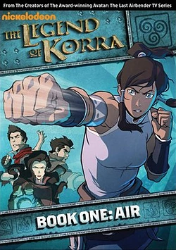
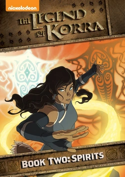
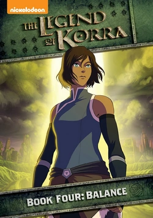

2005
A sorozat világában van négy nép, mindegyik néphez tartozik egy elem. Az emberek egy része képes is ezeket az elemeket irányítani, más szóval "idomítani". Aang az Avatár, a négy elem mestere, aki viszont gyerekkorában eltűnt és 100 éven át jégbe volt fagyva, mely időszak alatt a Tűz Népe háborút folytatott a Föld Királyságával és a Víz Törzsével. A világ már elvesztette a reményt a négy elem mesterének, az Avatárnak a visszatérésében.
A háború 99. évében találja meg őt két félárva fiatal a Déli sarkon, Katara, a vízidomár és Sokka, a harcos. Hárman útnak indulnak a világ másik végére vízidomármestert keresni, hogy Aang és Katara egy igazi mestertől tanulhassák meg a vízidomítást, de út közben a Tűz Népe vadászik rájuk, míg a Föld Királyságának nyugati partjain áthaladnak, ahol több falvat és várost is meglátogatnak. A két legfőbb üldözőjük a száműzött Zuko herceg a Tűz Népéből és Zhao admirális. Zuko motivációi viszont messze nem olyan egyértelműek, mint amilyennek először tűnhetnek. Zhao viszont az Északi Víz Törzsének megtámadására készül.
2006
A vízidomítás elsajátítása után Aang, Katara és Sokka visszatérnek a Föld Királyságába megkeresni Aang régi barátját, Bumi királyt, aki viszont a Tűz Népének fogságába esett. Az iparosodó Tűz Népe egyre közelebb kerül a háború megnyeréséhez, így az Avatárnak és barátainak fontos lenne sürgősen egy földidomár-mestert találni. A legalkalmasabb "jelölt" Toph Beifong, egy gazdag családból származó vak földidomár, akinek a világon talán a legszorosabb a kapcsolata az elemmel, így tökéletes mestere lehet Aangnak. A négy gyerek az útja során megtanulja, hogy a Föld Királyságának, de főleg annak fővárosának működésében rengeteg hiba van.
A Tűz Népének északi-sarki kudarca után Zuko herceget a Tűz Népe el akarja fogni, így ő és bölcs nagybátyja, Iroh kénytelenek menekültként élni a Föld Királyságában, ahol a kitagadott herceg közelről láthatja, mik a következményei a háborúnak, és kételyek merülnek föl benne.
2007